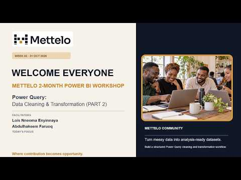

I need somewhere to apply my skills.
Build practical experience through Data, AI and Technology projects.
Explore projectsConnect with Data, AI and Technology professionals, contribute to practical projects and learn together. Free to join.
50 public project briefs
6 professional tracks
Real workshop recordings
A community to grow with
Find your fit. Explore the problem, roles and skills in each brief.
Explore all 50 project briefsExplore customer behaviour, portfolio performance and risk patterns in retail banking.
Suggested contributionsData Analyst · BI Developer
Build a reproducible road-safety data platform, from ingestion and validation to analytics-ready tables.
Suggested contributionsData Engineer · Data Quality Analyst
Build an evidence-led assistant for NHS guidance, with citations and reliable refusal behaviour.
Suggested contributionsAI Engineer · LLM Engineer
Learn from Mettelo workshops and recorded events.
All recordings on YouTube ↗
Playing this video connects to YouTube. Privacy information.
Progress is easier when you can discuss a difficult problem, learn from another approach and share what you know. Find that exchange in the Mettelo community.
Explore the communityJoin the conversation under our community guidelines.
Discuss technical challenges and exchange practical feedback.
Share knowledge, propose a workshop or explore mentoring and leadership contributions.
Connect what you have built with where you want to go. Prepare your applications, practise your story and explore relevant career opportunities.
Explore the Job BoardSign in to access the application, interview and career library. Some external resources require community access.
Understand your account, Labs, community and evidence.
Need something else?Contact the teamVerify your email and complete your profile. Home shows your next step; Lab holds applications and work; Portfolio gathers your evidence. Your member Home guides you.
No. Lab Market brings together updates, questions, project ideas and collaboration posts. You can follow people and discover opportunities without a Lab. Participation does not guarantee employment or payment.
Members see the details you choose to share. Control visibility and message requests in My profile. Hidden and blocked profiles stay unavailable; education, experience and private account details are not published automatically.
Read a brief, verify your email and reach 80% profile completion. Apply with your role and availability. Selection, acceptance and readiness checks precede Lab access. An application or invitation alone does not confirm a place.
The standard allowance is three. Official placements and Market collaborations share it. Paused Labs, accepted places in preparation and unexpired official offers hold slots. Completed Labs and fully exited memberships do not. Leaving releases a slot after access revocation completes.
Your contributions, evidenced milestone acceptances, practised skills and confirmed team delivery outcomes. Member-reported work is distinct from reviewed outcomes; neither is an independently verified qualification. Your portfolio stays private unless you explicitly share a selected summary.
Explore the Job Board and apply on the employer’s source website. Use the recorded workshops and member Resources to prepare. Check each advert’s deadline, eligibility and sponsorship details.
Use My enquiries for private account, application or Lab support, and follow replies there. Or use Contact & Support without an account. Never send passwords, access keys or confidential project data.
Yes. Use the partnership enquiry form to discuss a project challenge, workshop, mentoring or other collaboration. Explain the organisation, proposed contribution and intended benefit. Enquiring does not create a partnership or project commitment.
Start with our community, practical project briefs and career resources. Project workspaces and the Job Board are in preview ahead of public launch.
Meet people in your field, exchange practical knowledge and find collaborators.
Community channels availableExplore the community ↗Explore a brief and apply to contribute. Selected members build with their teams in the Lab.
Project briefs available · Labs in previewExplore projects ↗Prepare your applications and explore externally advertised roles relevant to your skills.
Career resources available · Job Board in previewExplore the Job Board ↗Evidence of contribution and demonstrated capability.
Practical insight into Data, AI and Technology work.
Tools to support professional work and development.
Events and showcases connecting people and ideas.
Preview services are being tested before public release. Developing services are future plans.
Find the people, practical work and support to move forward.